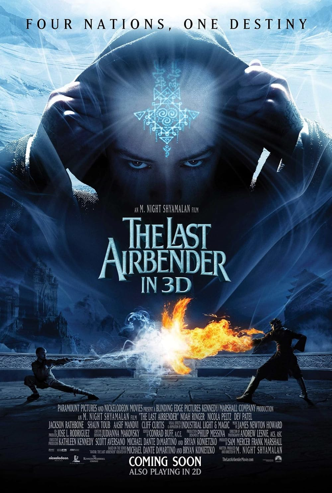

The Last Airbender is a fantasy adventure adaptation that attempts to condense a rich animated series into a single live-action film, but ends up feeling rushed and uneven. The visuals are often polished, and the elemental bending effects can look impressive at times, but they don’t fully capture the energy or personality of the original material. The story moves quickly through major plot points without much emotional buildup or character development. One of the biggest criticisms is the flat pacing and stilted dialogue, which makes it hard for the characters to feel engaging or memorable. Important relationships and arcs feel underdeveloped, and the film struggles to balance exposition with action. Overall, it’s a visually ambitious but widely criticized adaptation that doesn’t capture the depth or charm of the source series.
